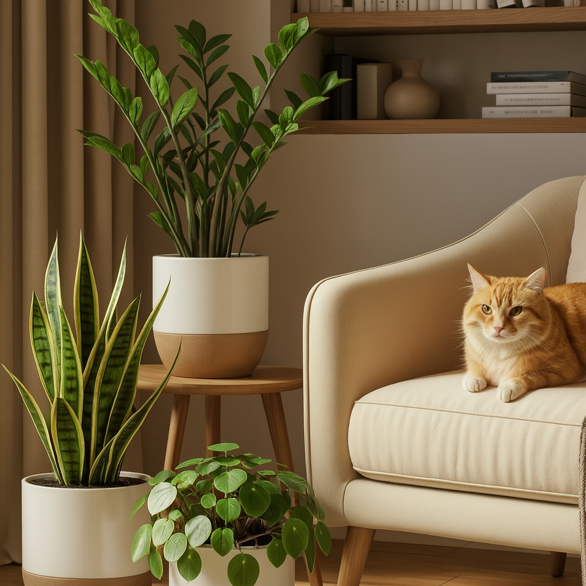

Plantas que seu gato vai ignorar (e sua casa vai agradecer)
Nem todo gato é um destruidor de plantas. Mas, sejamos honestos: conviver com felinos curiosos pode ser um desafio para manter sua selva urbana intacta.
Algumas plantas, no entanto, parecem simplesmente “invisíveis” para eles. E isso não é mágica — é ciência comportamental felina! Folhas imóveis, grossas e sem atrativos sensoriais costumam passar batido pelos bichanos.
Conheça agora 6 espécies incríveis que raramente despertam interesse nos gatos:
- Zamioculca – Brilhante, firme e pouco atrativa (⚠️ tóxica)
- Aspidistra – Folhas grandes e estáticas, ideal para sombra (✅ segura)
- Palmeira Ráfis – Elegante, resistente e pouco mastigável (✅ segura)
- Peperômia-argyreia – Compacta, visualmente neutra (✅ segura)
- Cactos pequenos – Pouco agradáveis ao toque, não estimulam (⚠️ alguns são tóxicos)
- Pacová – Folhas grossas e arredondadas, quase decorativas (⚠️ tóxica)
Mesmo plantas “ignorada” merecem atenção. Posicione em locais estáveis, longe de pias ou fontes d’água, e observe o comportamento do seu gato. Cada felino é único!
Quer mais dicas como essa? Confira nosso Instagram com o carrossel visual sobre o tema: 👉 @plantasngatos
← Voltar para o blog